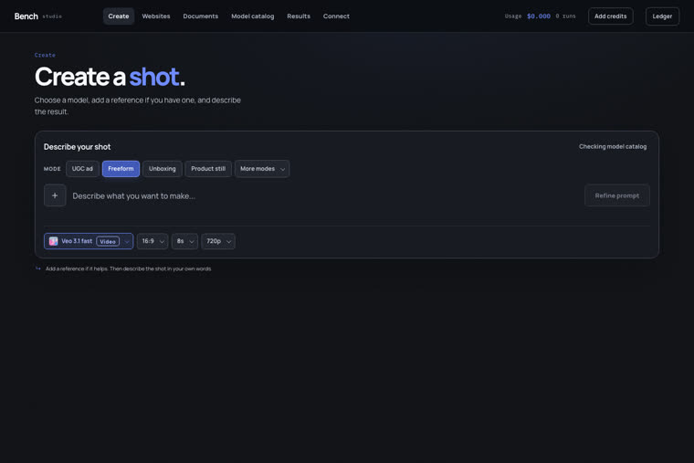
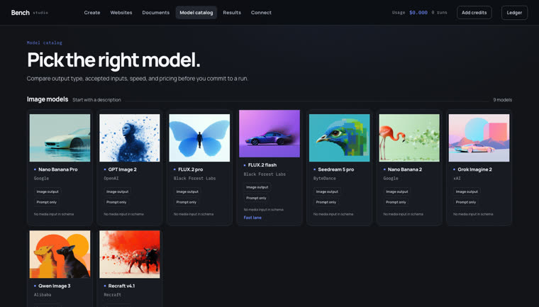

73 rotas de imagem e vídeo em 5 provedores, refino de prompt, controles derivados do schema de cada endpoint, arquivos guardados na sua máquina e um livro-caixa que mostra o custo em unidade real — não em crédito misterioso. Suas chaves nunca saem do servidor local.
A maioria dos produtos criativos de IA junta cinco peças úteis — acesso a modelo, refino de prompt, roteamento, armazenamento e cobrança — e esconde as emendas atrás de uma mensalidade. O Bench mantém a conveniência e deixa cada emenda inspecionável.
Ficam no servidor da sua máquina, nunca vão para o navegador. Provedor sem chave aparece como indisponível, com o motivo e como resolver — o estúdio sobe do mesmo jeito.
Cada modelo mostra o que ele realmente aceita: quantas imagens de referência, se tem quadro inicial e final, quais durações e resoluções existem. Nada de caixa genérica de upload.
Estimativa antes de rodar e gasto registrado depois. Quando a unidade não é previsível, ele diz isso em vez de inventar um total — e o consumo real é medido pelo saldo da conta.
O mesmo caminho vale pela interface e pelo MCP — o que um cliente de agente (Claude Code, Codex, Cursor) faz é entrar por outra porta no mesmo motor.
O rascunho é reescrito para o modelo escolhido e fica visível antes de gastar. Você aprova, edita ou descarta — nada é enviado pelas suas costas.
Toda saída é espelhada em data/outputs. As
URLs dos provedores expiram; os seus arquivos não.
npm run mcp expõe o catálogo e a geração
para clientes compatíveis, com as mesmas regras de custo e custódia.
Todo provedor degrada sozinho: falta de chave não derruba o estúdio, só marca aqueles modelos como indisponíveis. Traga pelo menos um para gerar alguma coisa.
Node 24 recomendado — o Bench usa node:sqlite.
Mais npm, e nada além disso.
# confira a versão node --version
Cobra em dólar, com preço ao vivo por endpoint.
# .env FAL_KEY=sua-chave
Consome crédito do plano. Autentica por OAuth no CLI oficial, não por chave.
npm i -g @klingai/cli-global kling login
Geração sem custo. Exige prompt em inglês — por isso o refinador importa.
# .env AGNES_API_KEY=sua-chave
Cobra em créditos. Sem API de preço por modelo: a estimativa é offline e rotulada como estimada.
# .env KIE_API_KEY=sua-chave
Opcional, mas vale: sem ele o prompt vai cru. Google AI Studio ou OpenRouter.
# .env — qualquer um dos dois GOOGLE_API_KEY=sua-chave OPENROUTER_API_KEY=sua-chave
Comandos reais do repositório. Do clone à geração dá para ir em três minutos.
Uma dependência de sistema só: Node.
git clone https://github.com/inematds/bench-studio-br.git cd bench-studio-br npm install
O .env.example documenta as 16 variáveis: o que cada uma libera, como cobra e onde criar
a chave. Preencha só o que você tem. A ordem de leitura é: exportado no shell > .env do
projeto > ~/.env.
cp .env.example .env # depois edite o que você tiver
Servidor e interface sobem juntos. A interface fica em http://localhost:5200 e a API, em loopback, na 8787.
npm run dev # http://localhost:5200
O botão Config mostra cada ajuste — presente ou faltando, de onde veio o valor e os 4
últimos caracteres —, testa cada provedor e escreve o .env para você. Por segurança, só
aceita gravação da própria máquina: pela rede é leitura.
# o valor da chave nunca aparece na tela, só os 4 últimos caracteres
No seletor, filtre por saída (imagem ou vídeo) e por provedor, e busque por nome — os três critérios se somam. Cada modelo anuncia a capacidade de referência: 1 imagem, até 10 imagens ou quadro inicial + final.
# 10 modelos aceitam primeiro e último quadro; eles ganham dois # seletores numerados, ① abre e ② fecha o vídeo
A barra mostra a estimativa quando ela é calculável (10 segundos × $0,14). Quando a
unidade não permite prever a quantidade, ele mostra o preço unitário e diz que o valor exato sai depois
da geração — em vez de exibir um total inventado.
# depois de rodar, o gasto real fica registrado no livro-caixa
O estúdio sobe sem senha, de propósito. Antes de deixá-lo acessível pela rede, defina uma — e só dá para definir da própria máquina, o que impede um estranho de trancar o dono do lado de fora.
npm run set-password # define ou troca; vale na hora npm run set-password -- --remove # remove
O mesmo catálogo e a mesma geração, expostos para Claude Code, Codex, Cursor e outros clientes compatíveis.
npm run mcp # servidor MCP npm run test:mcp # checagem rápida do contrato
O elenco da fal é descoberto do catálogo vivo; o do Kling sai do próprio CLI. Dá para sincronizar na mão ou deixar no automático (o seletor auto fica na linha do título do catálogo).
npm run catalog:sync # descobre endpoints novos npm run registry # reconstrói o registro npm run capabilities # reconstrói o manifesto de entradas
Criar e catalogar. Uma é onde a ideia vira arquivo; a outra é onde você decide quais modelos merecem estar à mão.


Nada aqui é promessa de marketing: o que está pronto está no repositório, e o que falta está descrito como falta.
X-Forwarded-For. Com nginx na frente, o cabeçalho precisa ser configurado — o servidor deveria exigir, não confiar.